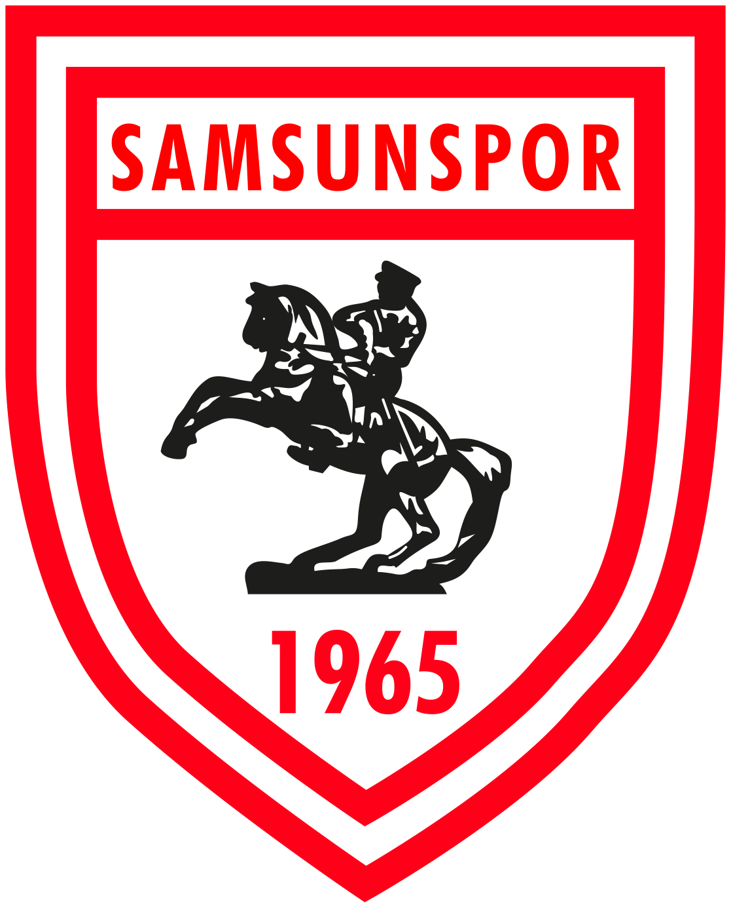

| SAMSUN
| SAMSUN SAMSUNSPOR
Samsunspor, profesyonel liglere ilk kez 1965-66 sezonunda günümüzdeki adı 1. Lig olan 2. Futbol Ligi'nde adım attı. 5 Eylül 1965 tarihinde ilk profesyonel lig maçını oynayan Samsunspor'un rakibi Yeşildirek idi. Samsun Şehir Stadı'nda oynanan ve hakemliğini Nadir Irmak'ın yaptığı maçı Samsunspor, Nihat Serçeme'nin attığı golle 1-0 kazanmıştır. Böylece Nihat, Samsunspor'un ilk lig golünü atan oyuncu olarak tarihe geçmiştir. Ligdeki bu ilk sezonunda Samsunspor, Beyaz Grup 5.si olmuştur. Aynı sezon Türkiye Kupası'nda ise henüz 2. turda Güneşspor'a elenilmiştir. Takım, 1966-67 sezonunda ligi 2.likle bitirirken, Türkiye Kupası'nda yarı finale kadar çıkmıştır. Kupada Konyaspor, Manisaspor ve Fenerbahçe'yi eleyen takım, Göztepe'ye iki maç sonucunda elenmiştir. Ertesi sezon kulüp, tarihindeki ilk başarısını elde ederek ligi Kamuran Soykıray'ın teknik direktörlüğünde Beyaz Grup lideri olarak tamamlamış ve 2. ligdeki ilk şampiyonluğunu yaşamıştır.
1969-70 sezonunda şimdiki adı Süper Lig olan 1. Futbol Ligi'nde ilk sezonunu geçiren Karadeniz takımı ligi 6. sırada tamamlamış ve bu ligde yer alan ilk Karadeniz Bölgesi takımı olmuştur. Beş sezon boyunca bu ligde mücadele ettikten sonra ise 1974-75 sezonunda ligi 24 puan ile 15. sırada tamamlamış ve 2. Futbol Ligi'ne düşmüştür. Bunun üzerine teknik direktör Basri Dirimlili'nin görevine son verilmiş ve tekrar Kamuran Soykıray takımın başına getirilmiştir. 1975-76 Türkiye 2. Futbol Ligi sezonunda Soykıray tekrar Samsunspor'u Beyaz Grup lideri yapmış ve 1. Futbol Ligi'ne taşımıştır. Ayrıca aynı sezon Gençlik ve Spor Bakanlığı Kupası'nda da mücadele edilmiş ve Bursaspor 2-1 mağlup edilerek bu kupa ilk ve son kez kazanılmıştı
1984-85 sezonu başında Fethi Demircan teknik direktör olarak getirilmiştir. O sezon ligi C Grubu lideri tamamlayan Samsunspor tekrar şampiyonluk yaşayarak 1. Futbol Ligi'nde yer almaya hak kazanmıştır.
1985-86 Türkiye 1. Futbol Ligi sezonu öncesinde Fahrettin Genç takımın başına getirilmiş, Zonguldakspor'dan da Muzaffer Badalıoğlu transfer edilmiştir. O sezon Tanju Çolak 33 gol ile gol krallığı yaşamış, ligi 3. sırada tamamlayan Samsunspor tarihindeki ilk gol kralını çıkarmıştır. Bir sonraki sezon ise kulüp, tarihinin en iyi sezonunu yaşamıştır. Tanju Çolak'ın 25 gol ile tekrar gol krallığı yaşadığı ligde 3. sırada yer alan takım Federasyon Kupası'nda ise yarı finale kadar yükselmiştir. Ertesi sezonsa lig sıralamasının 4. basamağında yer alınmış, Federasyon Kupası'nda da finale kadar gidilmiştir. Kupa finaline dek Nevşehirspor, Uşakspor, Kocaelispor ve MKE Ankaragücü elenmiş fakat iki ayaklı final sonucunda Sakaryaspor'a boyun eğilmiştir.
Samsunspor, ilk defa 1987-88 sezonunda Balkan Kupası ile yurt dışı macerası yaşamıştır. Balkan Kupası'nda B Grubu'nda yer alan takım Yunanistan'ın Iraklis takımına 21 Ekim 1987'de ilk maçta deplasmanda 4-3 yenilmiştir. İkinci maçta ise Bulgaristan'ın Sliventakımına Bulgaristan'da 7-0 kaybetmiştir. Samsun'daki maçta ise Samsunspor, Sliven’i 3-2 mağlup ederek gruptaki üçüncü maçını kazanmıştır. Gruptaki son maçında Iraklis'i Samsun’da 8 Ocak 1988 tarihinde 6-1 mağlup etmesine rağmen lider Sliven'in ardından ikinci olmuş ve gruptan çıkamamıştır.
Özellikle 1980'li yılların bu ikinci yarısında altın dönemini yaşayan Samsunspor bu dönemde 2. Futbol Ligi'nde 6 defa şampiyon olup 1. Futbol Ligi'ne yükselmiştir. 1985-1989 yılları arasındaki dönemde iki kez 1. Futbol Ligi 3.sü, bir kez lig 4.sü olan Samsunspor, 20 Ocak 1989'daki ölümcül kaza sonrasında büyük bir çöküntü dönemi yaşamıştır. O sezon ikinci yarı maçlarına çıkamamasına karşın Türkiye Futbol Federasyonu'nun sağladığı özel statü ile ligde bırakılan Samsunspor, sonraki 5 yıl içinde 1. Futbol Ligi ve 2. Futbol Ligi arasında mekik dokumuştur. Kulüp 1989-90 sezonu için ölçüsüz transferler yapmış ve kadro uyumu sağlanamayınca da küme düşmüştür. 1990-91 sezonunda tekrar 1. Futbol Ligi'ne yüksenilse de ertesi sezon tekrar küme düşülmüştür. Samsunspor, 1992-93 sezonunda şampiyonluk yaşayarak tekrar 1. Futbol Ligi'ne yükselmiş ve istikrarlı yıllar başlamıştır.